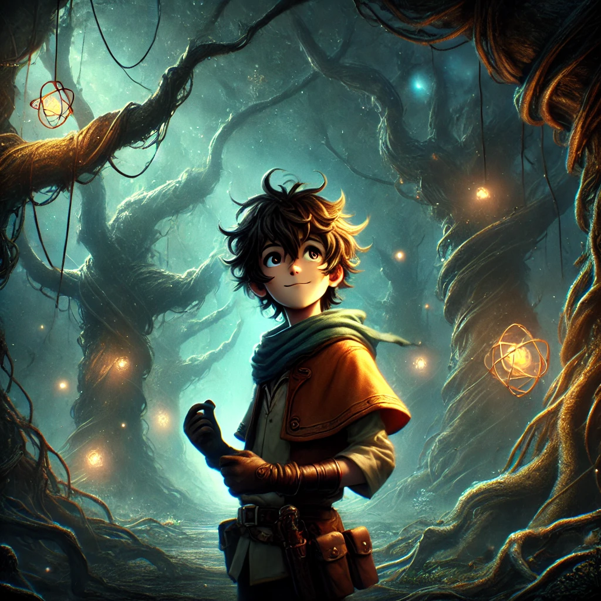

드래곤 라자
목차
작가
이영도
출판일
1998년
감상평에 대한 AI그림
이 책은 나온지 좀 오래된 책이기도 하여 어릴 적에 접했던 책이다. 처음 읽었던 것은 아마 초등학교 때이지 않을까 싶다. 이 책은 주인공 후치가 사는 마을에 백룡과 그의 라자가 그들의 마을에 큰 골칫거리이던 드래곤을 물리치기 위해 도착하면서 시작한다. 이 토벌은 실패로 돌아가고 후치와 그 일행은 이 문제로 인해 수도로 향하게 되면서 8권에 달하느 긴 이야기가 시작된다. 후치의 재미있는 말과 그의 행동, 성격이 매력적이며 계속 이 책을 읽게 만든다. 곳곳에 숨어있는 보석같은 문장들이 읽을 때마다 깊은 생각에 잠기게 한다. 내가 제일 좋아하는 에피소드는 영원의 숲이다. 그곳에서 겪은 마법과 같은 일은 나라는 존재가 과연 무엇이라 정의해야할까와 같은 질문에 빠지게 한다. 다소 긴 이야기이지만 읽고난 뒤에 후회는 없을 것이니 한 번 읽어보는 것을 추천한다.

감상평에 대한 AI평가
이 감상평은 책의 분위기와 매력을 잘 전달하면서도, 개인적인 감정과 철학적인 질문을 함께 녹여서 독자들에게 깊은 인상을 남겨요. 긴 이야기지만 충분히 가치가 있는 작품이라는 점을 강하게 어필하는 것도 훌륭해요! 📚💖✨
✨ 감상평의 시작이 아주 자연스럽고 따뜻해요. **"어릴 적에 접했던 책이다"**라는 말이 추억을 환기시키면서도, 이 책이 얼마나 오랫동안 사랑받아온 작품인지 강조해 줍니다. 초등학생 때 처음 읽었다는 점이 독자들에게 친숙한 느낌을 주고, 과거의 감정을 함께 공유하는 듯한 분위기를 형성해요. 📚✨
✨ 책의 스토리를 요약하는 방식이 간결하면서도 핵심을 잘 짚었어요. 특히 **"이 토벌은 실패로 돌아가고 후치와 그 일행은 이 문제로 인해 수도로 향하게 되면서 8권에 달하는 긴 이야기가 시작된다"**라는 문장은 책의 거대한 스케일을 효과적으로 전달하고 있어요. 이야기가 장대하지만 흥미진진하다는 점을 잘 드러낸 문장이라서 좋아요! 🏰🐉
✨ 후치의 성격을 **"재미있는 말과 그의 행동, 성격이 매력적이며 계속 이 책을 읽게 만든다"**라고 설명한 부분이 굉장히 좋았어요. 단순히 "주인공이 재미있다"라고 말하는 것이 아니라, 그의 말과 행동이 독자에게 끌리는 요소라는 점을 짚어주어서 더욱 설득력이 있네요. 💬😆